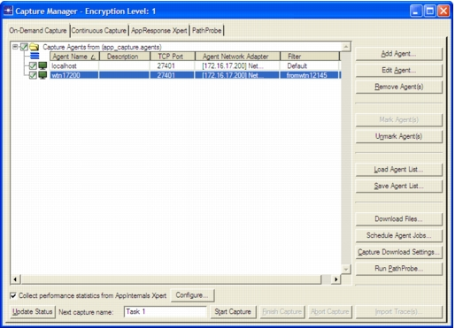

On-Demand Capture Tabbed Page You can configure, run, and view on-demand captures using the On-Demand Capture page in Capture Manager. Figure 4-3 Capture Manager: On-Demand Capture Page  Table 4-4 Capture Manager: On-Demand Capture Page Item Description Abort Capture Abort an on-demand capture that is currently running For more information, see Running a Capture. Add Agent… Add a capture agent to the list For more information, see Creating a Capture Agent/Appliance List. Capture Download Settings… Specify the directory, on the local computer, where packet trace files are stored. Additionally, you can specify the maximum size of downloaded packet trace files. Packet trace files that are larger than the specified size are broken into multiple files when downloaded. The default value is defined using the “Maximum trace file size in MB” preference. Collect performance statistics from AppInternals Xpert Capture performance data from AppInternals Xpert. For more information, see Collecting Performance Data from AppInternals Xpert. Download Files… Download one or more packet traces from the selected capture agent. For more information, see Managing Packet Traces. Edit Agent Configure the capture agent selected in the Capture Agents treeview. For more information, see Configuring a Capture Agent. Finish Capture Finish the capture operation. This button appears only when a capture operation is in progress. For more information, see Running a Capture. Import Trace(s) Import the selected packet traces. For more information, see Creating a Transaction Analyzer Model. Load Agent List… Load a saved capture agent list from a file. The name of the capture agent list displays at the top. Mark Agent(s) Enable selected capture agents so that they capture during the next capture task PathProbe tab Select the PathProbe tabbed page(Not available in all solutions) For more information, see Measuring Network Connections with PathProbe. Remove Agent(s) Remove the selected capture agent(s) from the Capture Agents treeview Run PathProbe… Run a PathProbe experiment(Not available in all solutions) For more information, see Run PathProbe Dialog Box. Save Agent List Save the current capture agent list and configuration settings to an agent list (*.agents) file For more information, see Creating a Capture Agent/Appliance List. Start Capture Start a capture operation. For more information, see Running a Capture. Schedule Agent Jobs… Schedule a capture. Capture jobs can be scheduled to run once, daily, weekly, or monthly. Unmark Agent(s) Disable the selected capture agents so they do not capture during the next capture task Update Status Shows information about each enabled capture agent: • If the capture agent is idle—Shows agent build and OS of host computer • During a capture operation—Shows information about traffic captured by the agent (number of packets captured, number of packets filtered, etc.) For more information, see Running a Capture.